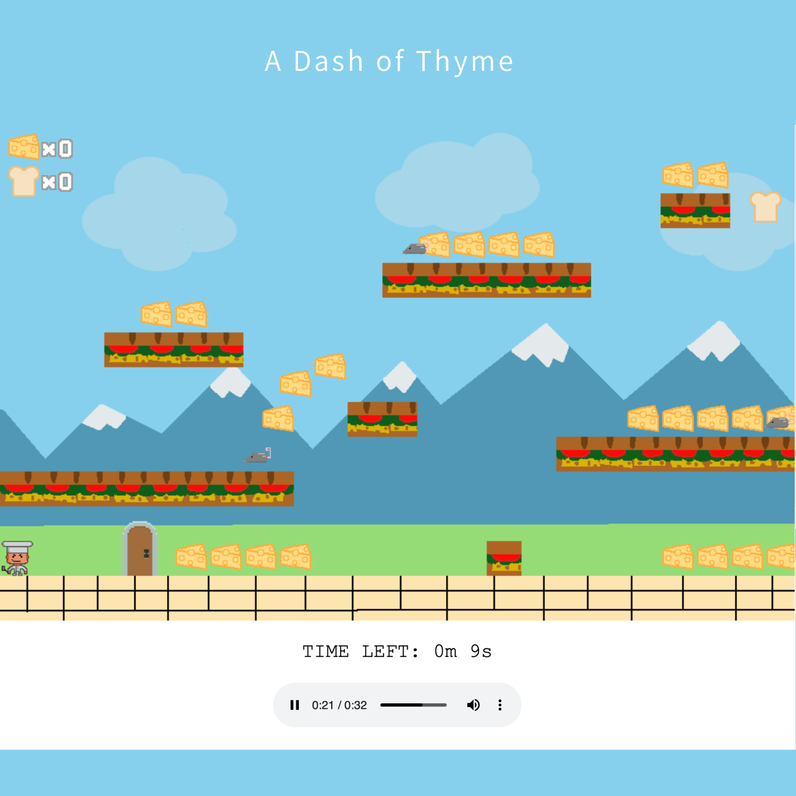

Projects
HackGT Fall 2021
For our school's hackathon, my team decided to prototype a web app that would help local
and small business manage their loyalty systems. Our product Valu was focused on the
gamification and creating a social aspect for business loyalty programs. I worked as the
team front-end designer and conceptual builder, using: HTML, CSS, JavaScript, and Figma
to do my work.
Our client facing UI
Our customer facing UI


Platform Game
For one of my computational media classes, our final project was to prototype and build a
game from scratch. Working with a team of four, I was given the roles of programmer and
designer. We built a platform game inspired by Nintendo Mario games, and based our game
on the theme of cooking. Our game was build using HTML, CSS, and JavaScript.
I've linked our game below if you'd like to give it a play.
Our game link

Tower Defense Game
For one of my computer science classes, we were tasked with building a tower defense game from scratch in teams of 4-5 throughout the whole semester. For this project, I was given the roles: designer and project manager. I still implemented code on the front-end side to make our game more visually appealing and engaging. Unfortunately, I am unable to share our game code since it is stored in a private repository, but we made a demo video to showcase our game, which I embeded below.
Rebranding Project
In the Spring semester of my freshman year, my final project for my visual design class was rebranding a local business. I chose to rebrand one of my favorite local coffee shops: Momo Cafe. The deliverables for this project included a brand prism, brand identity (color scheme, fonts, etc), a template for a webpage, and flyers for a promotional event for the business.